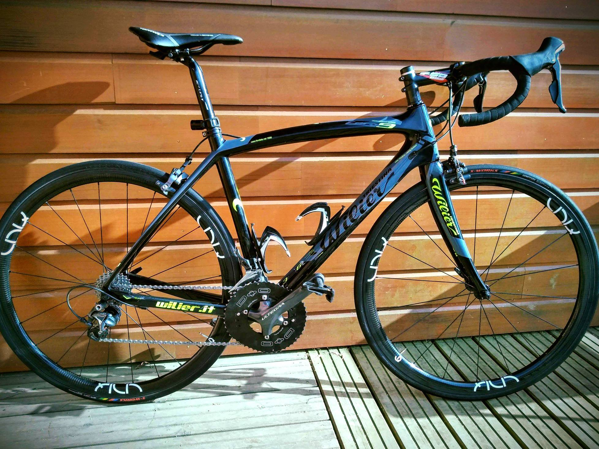
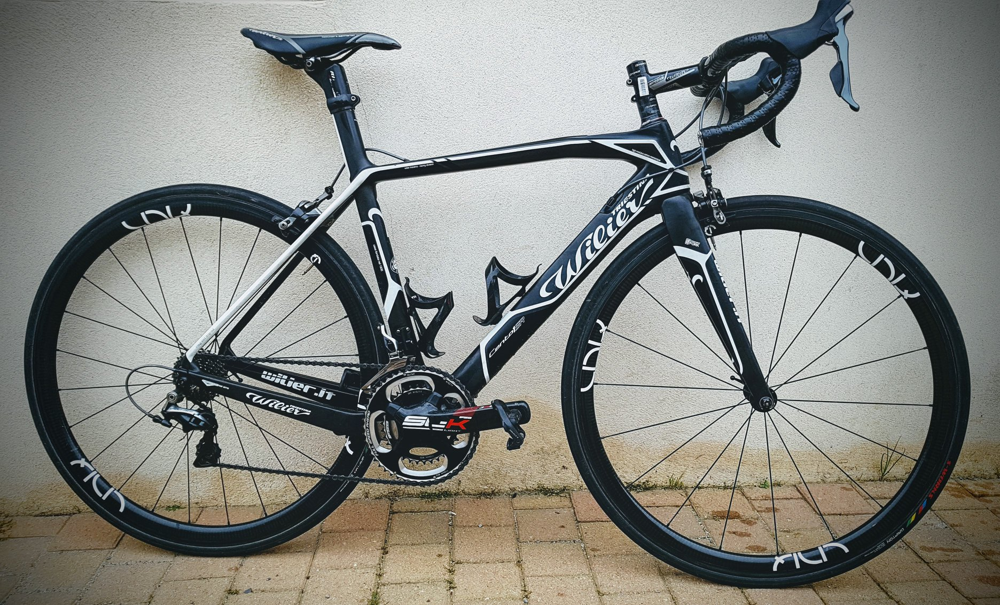
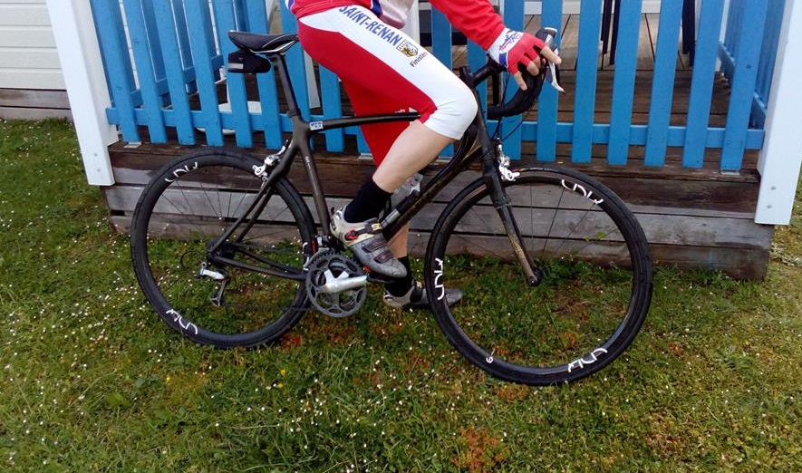
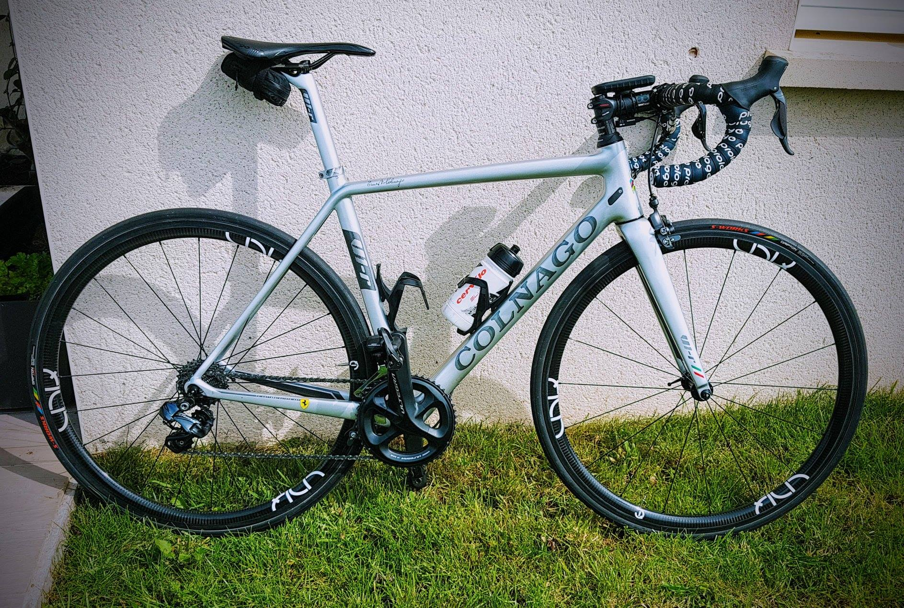

Nous validons nos roues avec l'aide de testeurs. Les testeurs sont de tout niveau, du rouleur occasionnel en passant par le cyclo-touriste, jusqu'au compétiteur.
Les testeurs roulent avec nos roues pendant une période donnée. Ils nous retournent ensuite un questionnaire rempli ainsi que les photos visibles dans cette section.
Nous nous engageons à remonter les informations de la manière la plus transparente possible. Avec cette page de test, notre volonté est de partager les avis sur nos roues.
Un barème est mis en place et les roues sont évaluées selon les critères précis suivants:
- Général: Note générale
- Esthétique: Avis sur le rendu esthétique et statique des roues
- Confort: Confort ressenti sur des revetements de mauvaise qualité
- Freinage: Qualité du freinage
- Dynamique: Comportement des roues lors de fortes accelerations et sprints
- Rythme: Facilité à maintenir un rythme soutenu
- Bosses: Aisance dans les montees
- Vent: Sensibilité des roues a la prise au vent. Note de 5: faible prise au vent

Sportif multisport, Delphin pratique le cyclisme et le VTT depuis quelques années. Il a pu tester les roues pendant 1 semaine et 3 sorties durant sur son Focus Cayo Team Replica...

En préparation pour l'Ironman Vichy, Christophe a embarqué nos roues UNIQ For Road pour quelques entraînements.
Nouveau test réalisé par Pascal avant son dernier exploit en CLM. Cette fois-ci, il a chaussé les UNIQ For Road RACE en 50 mm pour nous donner son avis...

Au tour de Thierry de nous livrer son avis sur les roues UNIQ For Road après 300km de test...
Patrick nous a fait le plaisir de tester les roues UNIQ For Road durant 4 sorties et quelques 600km pour une allure variée de 27km/h à 31km/h...

Jean-Yves a testé les roues UNIQ For Road lors du 18e tour de Bretagne FSGT à Erdeven du 10 au 13 mai 2018. Une cyclo de 350km, 26km/h de moyenne...

Au tour de Stéphane de tester nos roues. Avant de s'engager sur la course FSGT Blanc Bourgeoise du 29 avril avec les UNIQ For Road, Stéphane a validé ses sensations sur 2 sorties...
Lore nous a fait le plaisir de tester les roues UNIQ For Road lors de ses entraînements...

Nouveau test réalisé par Laurent lors d'une sortie de 40km pour sa reprise au soleil et dans le vent...
Maintenant, c'est au tour de Jimmy de nous faire son retour après l'entraînement des juniors durant leur sortie de 100km à 31.5km/h...
Test grandeur nature avec Pascal: 163km, 32km/h de moyenne et un beau dénivelé....